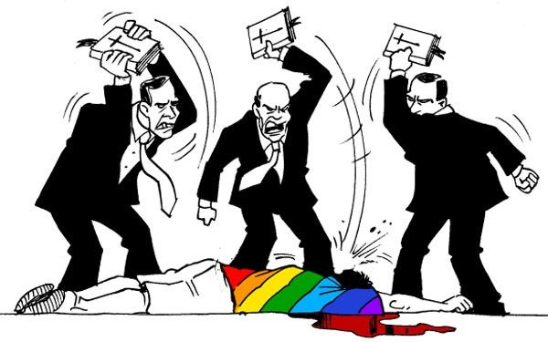

En su vida diaria, muchos miembros de las comunidades religiosas o de creencias enfrentan la discriminación por motivos de su religión o creencia. Se les limita de forma indebida el disfrute de sus derechos civiles, culturales, económicos y sociales. Como tales, los miembros de determinados grupos religiosos o de creencias sufren actos de discriminación que afectan su acceso a la educación pública, a los servicios de salud, o a cargos públicos. En casos extremos, algunos de ellos también son arrestados o pierden sus vidas a causa de su afiliación religiosa.
Las Naciones Unidas se han ocupado de este problema desde su fundación y la prohibición de la discriminación religiosa está consagrada en los principales tratados internacionales de derechos humanos. En este sentido, los Estados tienen el deber de abstenerse de discriminar a las personas o grupos con base en su religión o creencia (obligación de respetar); tienen el deber de prevenir ese tipo de discriminación, incluyendo la discriminación por parte de actores no estatales (obligación de proteger); y deben adoptar las medidas necesarias para velar por que, en la práctica, toda persona que se encuentre en su territorio pueda disfrutar todos los derechos humanos sin discriminación alguna (obligación de cumplir).
Apoya al Relator Especial sobre la libertad de religión o de creencias, cuyo mandato consiste en identificar los obstáculos existentes y emergentes que impidan el disfrute del derecho a la libertad de religión o de creencias, y en hacer recomendaciones sobre medios y formas para superar esos obstáculos. En este sentido, el Relator Especial presenta informes al Consejo de Derechos Humanos y a la Asamblea General, envía comunicaciones sobre casos individuales a los gobiernos y realiza viajes de investigación a países.
Apoya las actividades de la Comisión de Derechos Humanos. La Comisión supervisa la aplicación del Pacto Internacional de Derechos Civiles y Políticos, que incluye el artículo 2 sobre la no discriminación y el artículo 18 sobre la libertad de pensamiento, de conciencia y de religión.
Apoya las actividades del Comité de Derechos Económicos, Sociales y Culturales. En mayo de 2009, el Comité adoptó un comentario general sobre la no discriminación en los derechos económicos, sociales y culturales (artículo 2, párrafo 2).